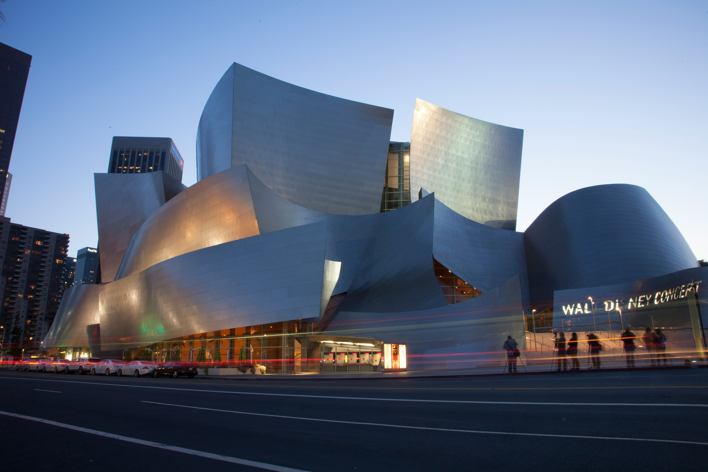
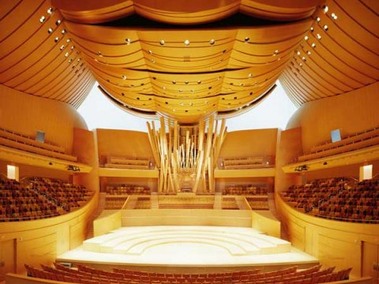
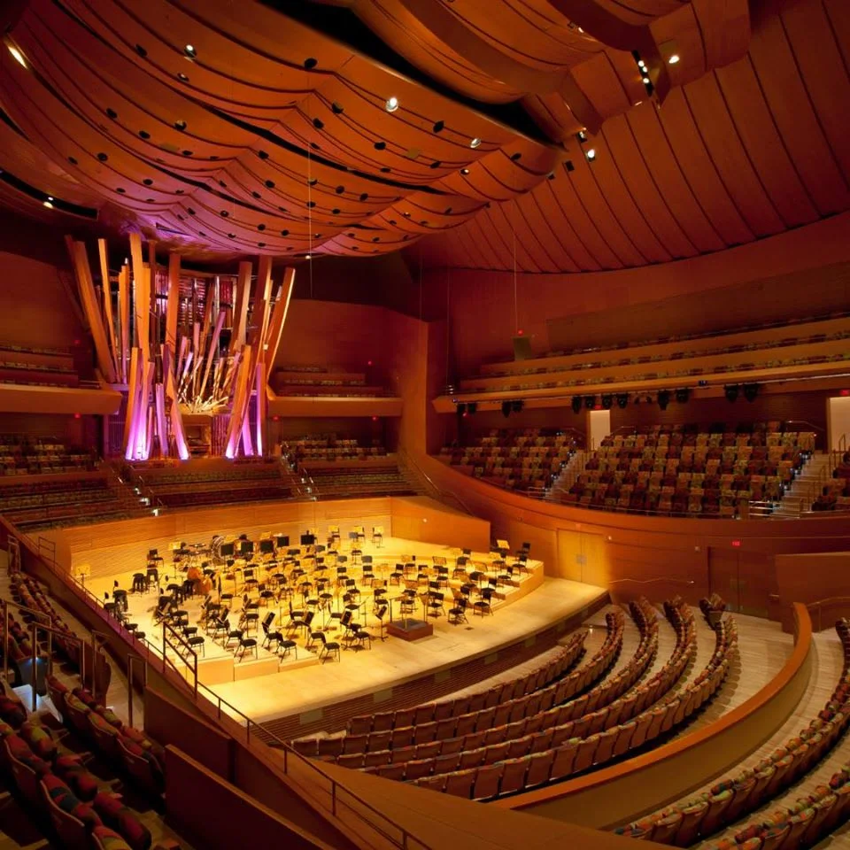
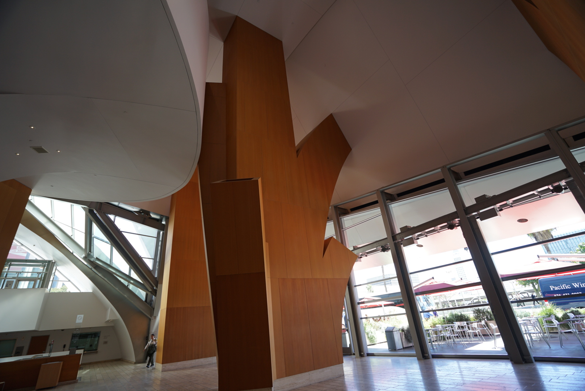
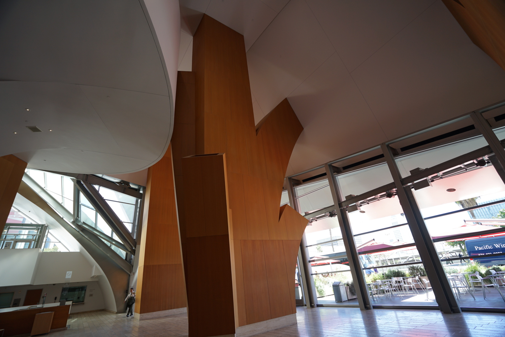
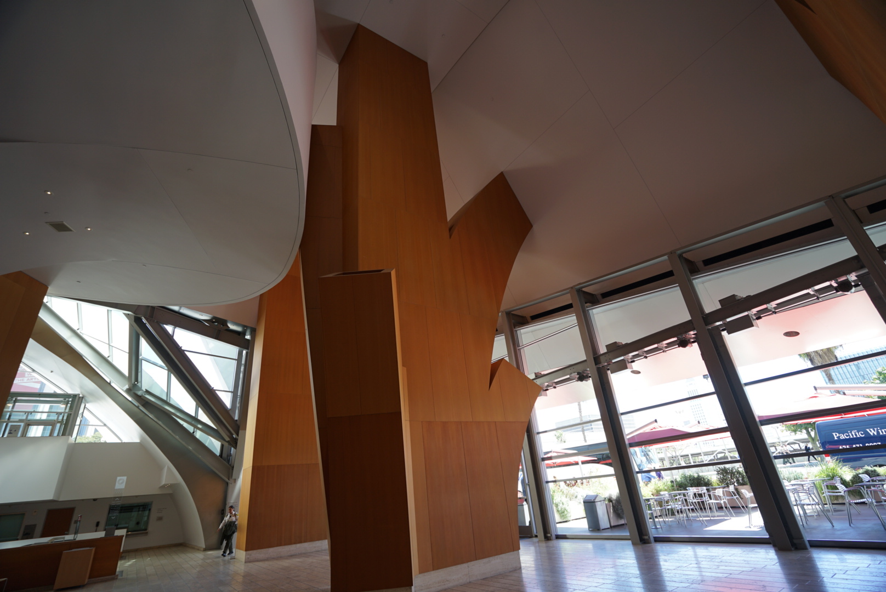

엘 캐피턴 극장(El capitan theater)
엘 캐피턴 극장은 할리우드 대로에서도 할리우드 명예의 거리 근처에 있는 역사적인 영화관입니다.
1920년대에 건설된 이 극장은 로스앤젤레스 최고의 극장 중 하나로, 할리우드에 대한 향수를 불러일으키는 특별한 쇼와 공연을 선보입니다.
새로운 영화를 초연할 때 종종 라이브 액션을 넣는다는 점에서 특색이 있습니다.
영화 애호가라면 누구나 엘 캐피턴 극장에서 즐길거리를 찾을 수 있습니다.
월트 디즈니 컴퍼니가 소유한 덕분에 다양한 장르와 쇼는 물론이고 방대한 디즈니 영화를 즐길 수 있습니다.
극장 디자인은 여러 층의 좌석을 두고 스페인 식민지 시대풍 양식으로 꾸몄어요. 넓은 강당은 1,100명을 수용할 수 있습니다.
주소 : 6838 Hollywood Blvd, Los Angeles, CA 90028, USA
전화 : +1 818-845-3110


더 오르페움 극장(The orpheum theatre)
오르페움 극장은 미국의 보드빌 공연과 영화를 선보이는 오르페움 서킷의 로스앤젤레스 지점이에요.
1926년 로스앤젤레스 다운타운에 건설된 이 역사적인 영화관은 프랑스 르네상스 스타일로 장식된 2,350석 규모의 강당이죠.
크리스털 샹들리에, 고딕 부채꼴 기둥, 펠밋 휘장 등으로 꾸민 호화로운 분위기에서 세계적 수준의 공연을 즐길 수 있어요.
오르페움 극장은 주로 보드빌과 벌레스크 공연을 개최하고 연중 내내 시상식과 영화 시사회도 진행해요.
여름에 오면 로스앤젤레스 컨서번시의 클래식 영화 시리즈인 라스트 리메이닝 시트를 감상할 수 있어요.
주소 : 842 S Broadway, Los Angeles, CA 90014, USA
전화 : +1 877-677-4386



월트 디지니 콘서트홀
월트 디즈니 콘서트홀은 로스앤젤레스 음악 센터 내 최첨단 극장이다.
로스앤젤레스 마스터 합창단과 로스앤젤레스 필하모닉의 상설 공연장이며, 주말 콘서트를 열고 오케스트라를 정기적으로 초빙한다.
월트 디즈니 콘서트홀에는 REDCAT(Roy and Edna Disney/CalArts Theater)이 있다.
무용과 연극 공연, 영화 상영, 라이브 음악, 대담이 정기적으로 열립니다.
멀티미디어 아트 갤러리에서 신예 미국 예술가들의 무료 순환 전시를 감상해 보세요.
셀프 가이드 무료 오디오 투어로 건물을 견학하실 수도 있어요.
주소 :5905 Wilshire Blvd, Los Angeles, CA 90036, USA
전화 : +1 323-850-2000


 

